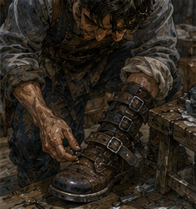

Berren looked better standing up than he had in my head. This was because my head had been working from RETURNED. MINOR INJURY, which could mean anything from a bruised wrist to an adventurer refusing to admit his foot was gone.
His foot was present.
Good start.
The boot was not.
The right one had been cut down the side and rebuilt with two extra leather straps around the ankle. He walked on it carefully but not cautiously enough to satisfy anyone with medical training.
Alden saw me looking.
“He’s fine.”
Berren said, “I’m excellent.”
“You are limping.”
“Stylishly.”
He had the same broad, unfinished confidence I remembered from Dema Rusk’s continuing-practice session. Not polished. Not stupid either. Young enough to enjoy being watched doing something difficult. He pointed at my wrist.
“Tag gone.”
“Yes.”
“Magic fixed?”
“No.”
“Then why remove it?”
“Because medicine is apparently not symbolic.”
He looked at Alden.
“Was he like this east?”
“Worse.”
“I was concise.”
“You argued with a six-year-old about whether a wall counted as magic.”
“She asked a technical question.”
Berren laughed.
Good.
Alive alive.
The phrase had been Alden’s.
Accurate.
Berren looked at my sword.
“Edge?”
“Fixed.”
“Then we can spar.”
“No.”
He blinked.
That surprised all three of us. Not because I did not want to.
I did.
Very much.
My body had already noticed his stance. Weight favoring the left leg.
Right foot protected.
Left shoulder slightly forward because he had adjusted his balance around the injury. His old heavy commitment would be worse from there.
Probably.
One exchange and I could confirm.
Maybe two.
No.
“Tomorrow,” I said.
Berren looked down at his boot.
“My foot works.”
“It walks.”
“Same thing.”
“No.”
Alden folded his arms.
“His ribs.”
Berren looked at me.
“Still?”
“Yes.”
“Mine healed.”
“You were bitten in the boot.”

“It was a very committed bite.”
“Through leather.”
“Good leather.”
Alden said, “It was not good leather.”
Berren pointed at him.
“You weren’t there.”
“No. I saw the boot.”
That stopped him.
Fair.
Berren looked back at me.
“Tomorrow?”
“Maybe.”
“That means yes.”
“It means maybe.”
“That means yes from people who want to pretend they have options.”
I liked him more for that.
Dangerous.
Not because of potential.
Well.
Some potential.
Mostly because he was funny.
Different.
“What are you doing?” I asked.
“Now?”
“Yes.”
Berren looked at Alden.
Alden looked at Berren.
Then both looked at me.
I had interrupted something.
Good.
Berren said, “Lunch.”
It was late morning.
“Early.”
“Second breakfast.”
Alden said, “He missed first.”
“Because my sister took my room key.”
I paused.
“What?”
Berren started walking.
Alden followed.
Apparently I was following too.
“Why did your sister take your room key?”
“She says I am not sleeping there tonight.”
“Why?”
“Because I came home from Darrowmere.”
“That normally helps with sleeping at home.”
“She thinks I need someone checking the foot.”
“Do you?”
“No.”
Alden said, “Yes.”
Berren ignored him.
“My aunt has a room over the bakery. Sister decided I’m sleeping there.”
“Did you agree?”
“No.”
“Are you?”
“Yes.”
Excellent.
“Why take the key?”
“So I cannot accidentally forget.”
“Do you accidentally forget often?”
“I forget selectively.”
Alden said, “He was going to train.”
“That is not forgetting.”
“It is when the healer says rest.”
Berren stopped walking.
“You told him?”
“I told nobody. He asked.”
“You told Greg.”
“He asked.”
“That is telling.”
Alden looked at me.
“See?”
I did.
The three of us reached a narrow bakery with two outdoor benches and no visible sign. I had passed it several times.
Never noticed.
Berren pushed through the door. A woman behind the counter looked up.
His sister.
Probably.
Same eyes.
Same nose.
Older by maybe four years.
Flour on both forearms.
She saw him.
Then his foot.
Then me and Alden.
“Sit.”
Berren said, “I am sitting.”
He was standing.
She pointed at the bench.
He sat.
I liked her immediately.
Not because she controlled him. Because she did not seem interested in whether she controlled him. She had bread to cut.
Alden said, “This is Nara.”
Nara nodded at me.
“Greg?”
“Yes.”
“Good. Keep him there.”
“No.”
Berren said, “Thank you.”
I said, “I am not taking responsibility for another adult.”
Nara looked at me.
“Then don’t.”
She put three rolls on the counter. That was the whole negotiation.
Good.
I sat anyway.
Alden bought the rolls.
His money.
Not mine.
I noticed.
He noticed me noticing.
“What?”
“Nothing.”
“You have money?”
“Yes.”
“Then why are you paying?”
“Because I want three rolls.”
“There are three of us.”
“Exactly.”
That was irritatingly normal.
Berren took one.
Nara slapped his hand away.
“You already owe me.”
“For?”
“Yesterday.”
“I was injured.”
“You ate four.”
“That is recovery.”
“You still owe me.”
Alden handed her another copper.
Berren looked offended.
“You are making me look poor.”
“You are poor.”
“I have money.”
“Then pay him back.”
Berren checked his pocket.
Two copper.
A small carved bone token.
A button.
A folded Guild slip.
He put one copper on the counter.
Alden took it.
No argument.
Something about that was new too.
Not the copper.
Alden collecting it.
Not turning repayment into a contest. Maybe I was inventing meaning.
Probably.
The roll was excellent.
Still warm.
I ate too fast.
My body had been hungry again without asking permission.
Nineteen.
Demanding machine.
Berren watched me.
“You drank last night.”
I stopped chewing.
“How?”
“You look terrible.”
Alden looked at me.
“You drank?”
“With Jorren.”
“Without me?”
“That is not how drinking works.”
“It can.”
Berren said, “Who’s Jorren?”
Alden answered before me.
“Old man.”
I looked at him.
“No.”
Berren looked delighted.
“You have an old man?”
“He is twenty-something.”
“Then why old?”
“He told Greg he fights like one.”
“That makes Greg old.”
“That is what I have been saying.”
Nara put a cup of water in front of me.
I had not asked.
I drank it.
Competence.
Again.
She went back to kneading dough. No further interest in us.
Berren leaned toward me.
“Show me.”
“What?”
“Magic.”
“No.”
“You can cast.”
“Yes.”
“So cast.”
“No.”
“Why?”
“Hessa said no repeated pressure work today.”
“One.”
“No.”
“That is not repeated.”
I hated that he was technically correct.
Alden saw it happen.
“Don’t.”
“I am not.”
“You’re thinking about it.”
“Yes.”
Berren grinned.
“What can you do?”
“Small Barrier.”
“How small?”
“Coin.”
“That’s terrible.”
“Yes.”
“Useful?”
“Yes.”
“How?”
There.
Not challenge.
Actual curiosity.
I could explain.
Too much.
Alden kicked my boot lightly under the bench.
“What?”
“You’re doing the face.”
Everyone.
I looked at Berren.
He had asked because he wanted to know.
Fine.
“Depends what part needs stopping.”
Berren waited.
I stopped myself before the lecture assembled.
“Finger. Edge. Trip point. Small redirect.”
His expression changed.
He understood enough combat to see it.
Not the whole system.
Enough.
“So you don’t block the sword.”
“Usually too expensive.”
“You block the hand?”
“Sometimes.”
“Foot?”
“Sometimes.”
“Eye?”
“No.”
“Why not?”
“Because I am trying not to blind people.”
“That seems limiting.”
Alden laughed.
Nara, without turning, said, “No fighting in front of the bakery.”
“We are discussing.”
“That becomes fighting with Bronze idiots.”
Berren raised his hands.
“Not me.”
Nara looked over.
All three of us stopped talking.
Good.
She returned to dough.
Berren lowered his voice.
“Tomorrow.”
“Maybe.”
“Barrier?”
“No.”
“Why?”
“Because if we spar, I want to know what my body can do without cheating first.”
That came out before I decided whether it was true.
Alden looked at me.
Berren looked at me.
I looked at the roll.
Interesting.
Old Greg would have called magic part of the body.
Correct.
Current Greg had two separate questions.
Could nineteen-year-old Greg fight?
Could nineteen-year-old Greg with a tiny support tool fight?
Different tests.
Berren said, “You think magic is cheating?”
“No.”
“You just said.”
“I said without cheating first.”
“That means you think it’s cheating.”
“It means I used a lazy word.”
“Old men do that.”
Alden nearly choked.
I disliked both of them.
Nara said, “Outside.”
“We are eating.”
“Then eat quieter.”
We did.
For almost a minute.
Then Berren unfolded the Guild slip.
“Work.”
Alden leaned over.
I did too.
Not Darrowmere.
Good.
A local contract.
Broken millrace gate west of the city.
Not emergency.
Two Bronze minimum.
Three preferred.
Manual clearing and watch duty while mill crew repaired the gate.
Possible river lizards.
Low threat.
Half-day.
Pay: four copper each plus meal.
Berren tapped it.
“Tomorrow.”
I looked at his foot.
He saw.
“Millrace.”
“Yes.”
“Wet stone.”
“Yes.”
“Slippery.”
“Yes.”
“Bad foot.”
“It works.”
Alden said, “I’m going.”
I looked at him.
That decision had already happened.
Good.
“With Berren?”
“Yes.”
“Why?”
“Four copper.”
“Also?”
Alden shrugged.
“Easy work. Haven’t done west mill in months.”
“Who else?”
“Maybe Cal if he’s off rider work.”
Berren said, “No. Cal said no.”
“Why?”
“He has actual work.”
Good.
They had asked someone else before me.
Also good.
Berren looked at me.
“You?”
There it was.
I could say yes.
Bronze work.
Three people.
Manual job.
Low threat.
Water.
Chance to see Alden with another partner. Chance to test repaired sword if lizards. Chance to observe Berren’s foot under work.
No.
That last thought.
There.
I understood his injury.
I could probably predict where it failed. That did not make the contract mine.
I asked, “Do you need me?”
Berren said, “No.”
Immediate.
Clean.
Alden looked at him.
Berren shrugged.
“We have two. Three preferred. They’ll take two.”
I waited.
“Do you want me?”
Berren considered.
“Maybe.”
That was better.
“Why maybe?”
“You talk.”
Alden nodded.
“You also notice things.”
Berren pointed at him.
“See? That’s the problem.”
I laughed.
“Do you want the job?”
I asked Alden.
“Yes.”
“Then go.”
He looked at me like I had missed something.
“You can come.”
“I know.”
“Do you have work?”
“Yes.”
“Antonius?”
“Sometimes.”
“Pell?”
“Maybe.”
“Hessa?”
“Tomorrow if symptom-free.”
“Then come after.”
I looked at the slip.
Millrace.
Four copper.
Meal.
No grand significance.
Exactly the sort of job nineteen-year-old Greg had probably done dozens of times.
Maybe this exact one.
Memory offered nothing.
That felt almost peaceful.
“I’ll decide tonight.”
Berren folded the slip.
“That means no.”
“It means I’ll decide tonight.”
“That means no from people who want to pretend they have options.”
He had already used that.
It was still good.
Nara set another roll in front of him.
He looked suspicious.
“You’re charging me.”
“Yes.”
“How much?”
“Tomorrow.”
“Hostile.”
“Family.”
He ate it anyway.
Alden leaned back.
“What happened on your side?”
There.
Darrowmere.
Not because I asked.
Berren looked at him.
“North orchard?”
“Yes.”
He chewed.
“Mostly waiting.”
Good.
“Then screaming.”
Less good.
Nara’s hands slowed for half a second.
Only half.
Berren noticed.
Changed his voice slightly.
Not softer.
More ordinary.
“One came over the wall. Watch had torches. We had hooks.”
“You had hooks?”
“Dema’s hook boy.”
He pointed at himself.
Right. Berren had been the hook boy in class.
He looked proud.
Not because history mattered.
Because the stupid thing had worked.
“I hooked the rear leg.”
I sat straighter.
Alden saw.
“Here we go.”
“What?”
“Face.”
Berren continued.
“Bad idea.”
“Why?”
“It turned.”
Of course.
“How fast?”
“Fast.”
“Transition?”
“What?”
“Did it plant before turning?”
“I don’t know.”
“Hip drop?”
“I don’t know.”
“Tail?”
“No tail.”
“Weight shift?”
“Greg.”
Right.
Berren was not a field report.
He had nearly died.
I stopped.
Mostly.
“What happened?”
He looked down at the rebuilt boot.
“I pulled. It came at me instead of the watch.”
Alden stopped smiling.
Nara kept kneading.
Berren continued.
“Thought I had distance. Didn’t.”
There.
His old flaw.
Winning first part means owning second.
I knew it.
Dema knew it.
Jorren would know it in five minutes.
Berren probably knew now.
Maybe.
I did not say.
He looked at me.
“Go on.”
“What?”
“You have a face.”
Fuck.
“What do you think?”
There was permission.
Different.
“You treated the hook landing like the exchange was over.”
He stared.
Then nodded.
“Yes.”
Not defensive.
No joke.
“I got the leg. Thought I had it. It came sideways.”
“Then?”
“Fell.”
Alden said, “You?”
“Creature.”
“Why?”
Berren smiled.
“Tree root.”
That was not his success.
He knew it.
“Watch stabbed it. I got up. Then it got my boot.”
Alden looked at the thick leather.
“How?”
“I tried to pull the hook free.”
I closed my eyes.
“Greg,” Berren said.
“I said nothing.”
“You made a whole speech with your forehead.”
Nara laughed.
I opened my eyes.
“Why pull it free?”
“Because it was my hook.”
Alden put both hands on the table.
“Oh, that is terrible.”
“I know now.”
“Did you know then?”
“No.”
Good.
Actual learning.
Not from me.
Not from Dema.
From teeth.
Expensive teacher.
Berren drank water.
“I left it.”
“Eventually.”
“Yes.”
“What happened to the hook?”
“Still there, probably.”
Alden said, “You lost Guild equipment?”
Berren’s face changed.
Not fear.
Administrative pain.
“They charged me.”
“How much?”
“Six copper.”
Alden laughed so hard Nara told him to leave.
He did not.
Berren pointed at him.
“It was a good hook.”
“It was six copper.”
“It saved me.”
“The tree root saved you.”
“The hook helped.”
“The hook almost killed you.”
“Tools are complicated.”
I liked that.
Too much.
“What did you do after?”
“Waited.”
I blinked.
Berren shrugged.
“Healer said sit. Watch said hold the path. So I sat.”
That was probably harder for him than the fight.
“Did another come?”
“Maybe.”
“Maybe?”
“Something moved outside the orchard.”
“Creature?”
“Could have been.”
“Did you chase?”
He looked at me.
“No.”
There.
Not mine.
His.
Alden smiled.
Not at me.
At Berren.
“Good.”
Berren gave him the finger.
He was learning without becoming easier to predict. Good.
Nara brought him another cup.
He took it.
No argument.
I looked at Alden.
“What did you tell him about our road?”
“Enough.”
“What is enough?”
“He knows you almost died because you tried to save my scarf.”
“That is false.”
Berren grinned.
“I heard wall.”
“Palm Barrier.”
“Wall.”
“Three inches.”
“Tiny wall.”
“Redirect.”
“Magic wall.”
I gave up.
Alden looked pleased.
Berren said, “He said you knew where everything was going but couldn’t get there.”
I looked at Alden.
He did not look away.
He had told Berren.
That was his information to share.
About me.
I felt an immediate urge to correct the phrasing.
Did not.
Berren looked at my repaired sword.
“Tomorrow.”
“Maybe.”
“Now I want to spar more.”
“Why?”
“Because if your brain is better than your body, I want to see which one wins.”
“That is a stupid reason.”
“Yes.”
Honest.
Alden said, “I want in.”
“No.”
Both of us said it.
Alden looked offended.
“Why?”
Berren said, “Because then it’s three people.”
“That’s how counting works.”
“I want Greg.”
There was potential danger in that sentence.
Not emotional.
Physical.
Berren wanted a test.
So did I.
Good.
But Alden wanted something too.
“Why?” I asked him.
“Because you two will turn it into a duel.”
“It is a spar.”
“Exactly.”
“What do you want?”
“Rounds.”
I waited.
He continued.
“Short. One against one. Switch. No one gets to keep solving the same person for twenty minutes.”
That was good.
Very good.
Not mine.
Alden had designed around me.
And Berren.
He knew I learned people quickly. He knew Berren liked proving a point. He had built the structure to keep both from settling.
I felt something bright.
Potential.
Competence.
Both.
Dangerous combination.
“That is better,” I said.
Alden smiled.
“I know.”
Berren said, “Tomorrow?”
I looked at the two of them.
My body wanted yes.
My ribs said maybe.
Hessa said normal beginner casting but no repeated pressure today, fuller Barrier tomorrow if symptom-free.
Sword repaired.
Berren foot compromised.
Alden left arm probably near normal but not explicitly cleared.
No.
Do not assume.
“What’s your shoulder?”
I asked.
Alden rolled it.
“Cleared for normal use this morning.”
I had not known.
Good.
“When?”
“Before I found Berren.”
“You didn’t tell me.”
“You didn’t ask.”
Excellent.
“Tomorrow,” I said.
Berren slapped the table.
Nara looked over.
“No fighting here.”
“Tomorrow.”
“Not here.”
“Obviously.”
She looked at him.
Not obvious.
Fair.
“Guild yard,” Alden said. “Late morning.”
“I have Hessa.”
“After.”
“Assuming she clears fuller work.”
Berren said, “No magic first.”
I looked at him.
He remembered.
“I thought you said magic was terrible.”
“I want terrible magic after.”
Fair.
Alden said, “Rounds.”
“Yes.”
“Short.”
“Yes.”
“No chasing after a clean touch.”
That was aimed at Berren.
He nodded.
“No extending after call.”
Aimed at me.
I nodded.
Interesting.
Alden was setting terms.
We both accepted them.
That should not have felt remarkable.
It did.
Not because he was becoming mine. Because he was becoming harder to use badly.
Good.
Maybe that thought was still about me.
Probably.
Nara said, “Berren has a mill job tomorrow.”
Silence.
Berren looked at her.
“How do you know?”
“Your sister told me.”
Alden started laughing.
Berren looked betrayed.
“You talked to Lara?”
Name.
Sister Lara.
Okay.
Nara said, “She buys bread.”
Of course.
The world was unbearable.
“What time?” Nara asked.
Berren looked at the Guild slip.
“Afternoon.”
Alden leaned over.
“It says report at noon.”
“Afternoon.”
“Noon.”
“Late morning.”
I said, “That destroys our spar.”
Berren looked at me.
“You have Hessa.”
Alden looked at Berren.
“You have work.”
All three of us sat there.
Excellent planning.
Nara cut dough.
“Fight after the mill.”
Berren said, “Foot.”
“Then don’t.”
Alden said, “Day after.”
I wanted tomorrow.
My body wanted tomorrow.
My mind had already started building rounds.
Bad sign.
“Day after,” I said.
Berren frowned.
Then nodded.
Alden nodded.
Done.
No one died.
Amazing.
Berren stood.
Nara pointed.
“Sit.”
He sat.
“What?”
“You’re limping more.”
He looked at his foot.
So did I.
She was right.
The walk and sitting had stiffened it. Or the swelling was returning.
Berren saw my face.
“No.”
“I did not say anything.”
“You were about to improve my foot.”
“I cannot improve feet.”
“You know a healer.”
“I know several.”
“No.”
There.
Permission denied before intervention.
Fine.
“Your sister already has a plan,” Alden said.
Berren looked betrayed again.
“You’re both terrible.”
Nara handed him a wrapped loaf.
“For your aunt.”
He took it.
“Put it on my debt.”
“No.”
“Why?”
“She paid.”
Berren stopped.
“When?”
“Morning.”
He stared at the loaf.
Family.
Obligations already moving around him.
He looked embarrassed.
Not deeply.
Enough.
Then annoyed.
“She shouldn’t.”
Nara shrugged.
“Tell her.”
He would.
Maybe.
Not my problem.
I stood.
Alden stood.
Berren tried.
Nara pointed.
He sat again.
Alden laughed.
“I’ll walk Greg.”
“I know the street.”
“That’s not why.”
“Why?”
“I have work.”
“Where?”
“South gate board.”
I blinked.
“Today?”
“Yes.”
“You didn’t mention.”
“I was eating.”
Right.
He had somewhere else to be. He had stopped here because Berren was here. Now he was leaving because his day continued.
“What work?”
“Short escort signup.”
“Where?”
“South farms.”
“Today?”
“Tomorrow morning.”
“You already have millrace tomorrow.”
“That’s Berren.”
Right.
I had merged them.
Alden grinned.
“You’re doing it.”
“What?”
“Collecting.”
“I am not.”
“You’re trying to fit everyone into one schedule.”
That was not wrong.
I looked at him.
He looked back.
No lecture.
Just amused.
“Fine.”
We stepped outside.
Berren called after us.
“Day after.”
I turned.
“Maybe.”
He threw a napkin.
Missed.
Nara told him to sit.
We walked.
At the corner Alden stopped.
“South gate.”
“Guild is north.”
“Board moved.”
“Why?”
“Farm contracts.”
“Do you want company?”
He considered.
“No.”
Clean.
“Fine.”
I meant it.
Mostly.
He started away.
Then looked back.
“You coming to the mill?”
I looked at him.
“You are not.”
“No.”
“Then why ask?”
“Berren asked me to ask.”
“Why didn’t he ask?”
“He forgot.”
That sounded like Berren.
“Maybe.”
Alden nodded.
“Good.”
Then left.
I stood alone at the corner.
Regulator in bag.
Sword at hip.
No tag on wrist.
Small casting allowed.
Hessa tomorrow.
Spar day after.
Maybe mill tomorrow.
Antonius work somewhere.
Pell tests waiting.
Edrin tests waiting.
Pel Marris waiting if I was stupid enough to make them urgent. For once, the strongest next thing was not a mystery. It was deciding whether I wanted to spend half a day clearing a millrace with Berren.
Four copper.
Meal.
Possible river lizards.
Bad foot.
Wet stone.
Young body.
Ordinary Bronze work.
I smiled.
Then caught myself.
No.
Not the face.
Too late.
A woman passing with a basket saw me looking pleased at nothing and crossed the street.
Reasonable.